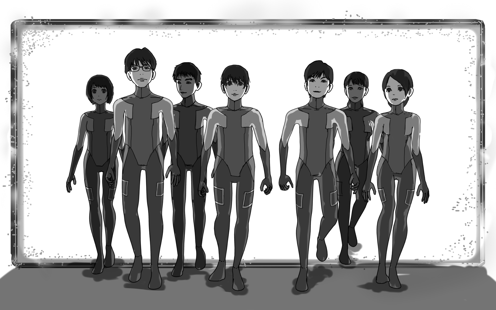
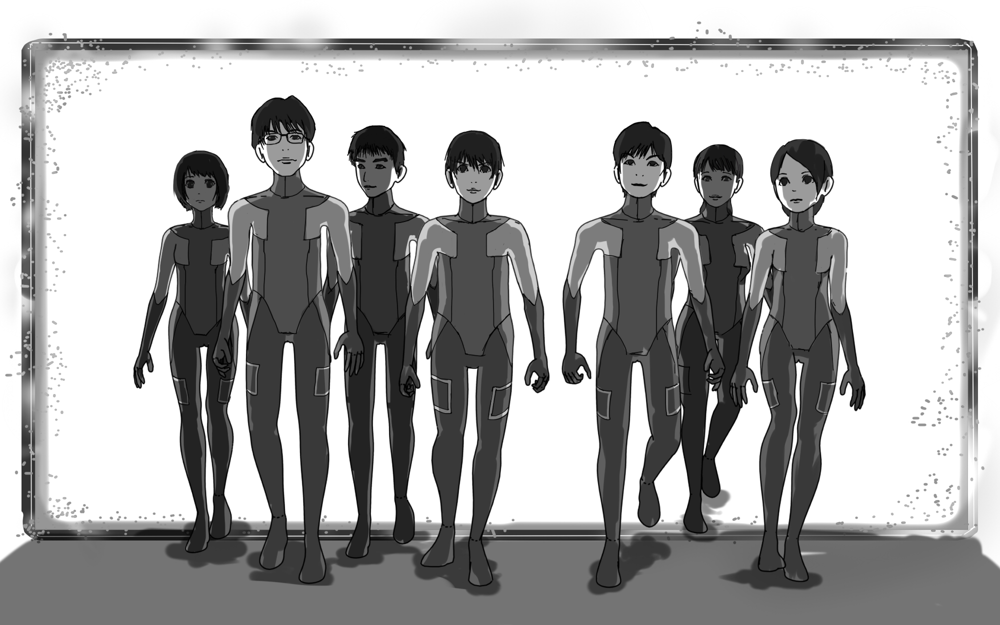

イタい人をふやす。
私たちはカヤックの研修で学んだことがあります。
それは失敗を恐れずに行動することです！
なので失敗を恐れずに起業します！
失敗しても良いんです。言いにくいこともガンガン言います。
僕らはポジティブなイタい人を増やす事をミッションとしています。
そのためまずは自分たちがイタい人になりました！
二次元移住


世界の理

世界の理です。
世界の全ての現象を司るただ一つの現象を求める太陽の下に集った者たち。
我々の共通点はただ、「作る」ことで世界を動かす何かをクリアにしたいと思っているということのみだ・・・・・・
進行中の驚くべき計画については、ここに記すには余白が狭すぎる。
世界の理です。
世界の全ての現象を司るただ一つの現象を求める太陽の下に集った者たち。
我々の共通点はただ、「作る」ことで世界を動かす何かをクリアにしたいと思っているということのみだ・・・・・・
進行中の驚くべき計画については、ここに記すには余白が狭すぎる。
ヘルニア